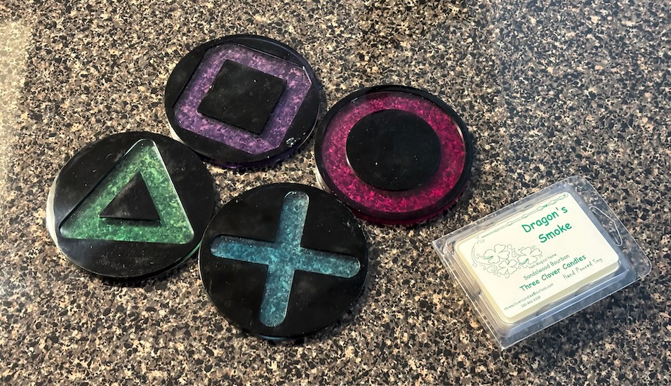
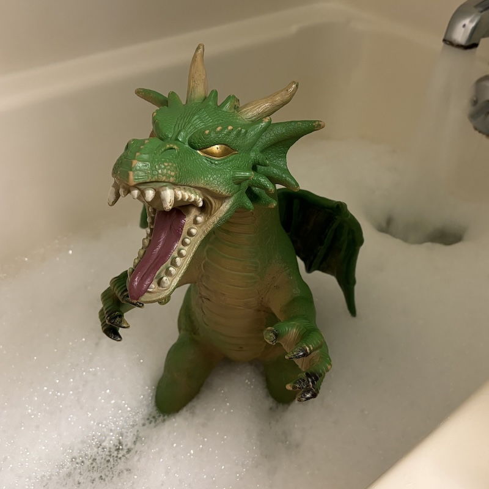
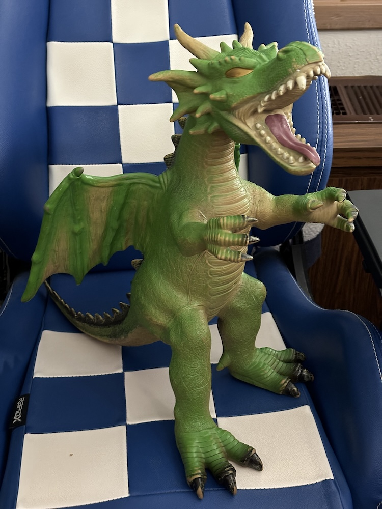

this weekend i went to oddmall, a local craft show/flea market/dealers den type thing that oocurs every couple of months or so in my area. it's always a fun time with lots of cool stuff to peruse and spend way too much money on. unfortunately i didn't think to take any pictures this time because it was PACKED and i had to spend 100% of my brain power just trying to navigate around and not bonk too many people with my tail. there were SO MANY DRAGONS there though! out of every oddmall i've been to, this one had the highest concentration of draconic wares by far. there were dragon incense burners, dragon plushies, dragon potions (hopefully ones that turn you into a dragon?), dragon clocks, dragon paintings, dragon phone charms, and about a million of those 3D printed wiggly dragons. there was one dragon incense burner in particular that was literally just a sphere with a head and legs and i wanted it SO BAD because that's the perfect dragon shape, but sadly my current apartment doesn't allow burning incense so i had to pass up on it. i also just spent a ton of money on a new phone and a fancy KVM switch (which i may be posting about once i install it) so i had to be a bit responsible with my spending, but i did pick up these cool translucent playstation coasters and some dragon-scented wax melt cubes.
afterwards, i went to check out a cool store called "the retro attic" that i had just heard about on my city's subreddit. (i also didn't take any pictures there unfortunately!) it's a house that's been converted into a store that sells all sorts of music, movies, games, and toys from the 70s up to the 2000s. the whole place is decorated like an 80s kid's bedroom and contains more CDs than i've ever seen in a single building at once - there had to be thousands! i started going through all the CDs in the first room i entered, but immediately gave up when seeing that the entire hallway and two other rooms were completely lined with even more CDs, so i'll have to return someday to look through the rest of them. while i was there, i eneded up buying an adorable squishy rubbery dragon, and i named him Briar because he's green and spiky! he was a little deflated and dirty when i got him, so i found a cheap ball pump and inflated him back up, then gave him a bath.
squeaky clean! this guy's been quite the cuddler ever since i brought him home. he's even sitting on my lap right now as i'm writing this!
